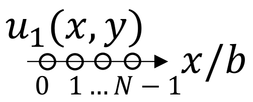

The number of different optical phenomena has become in our time so great that caution must be taken so as to avoid being deceived, and also to refer the phenomena to the simple laws.
The Fraunhofer approximation (far-field approximation) of the first Rayleigh integral is derived. A discussion on beamwidth follows. An engineering application of beam steering is then presented. Reflection problems and "beam displacement" are also discussed. The section concludes with a short discussion on arrays.
Contents:
The Fraunhofer approximation will now be derived from the first Rayleigh integral, \begin{align}\tag{1}\label{Rayleigh1} p_\omega(x,y,z) &= -\frac{ik\rho_0c_0}{2\pi } \iint_{-\infty}^\infty u(x_0,y_0) \frac{e^{ikR}}{R} dx_0 dy_0\,. \end{align} Begin by considering the source-to-listener distance \(R\), and factor out \(r = \sqrt{x^2 + y^2 + z^2}\): \begin{align*} R &= \sqrt{(x-x_0)^2 + (y-y_0)^2 + z^2}\\ &= \sqrt{r^2 - 2(xx_0 + yy_0) + (x_0^2 + y_0^2)}\\ &= r \bigg( 1 - 2 \frac{xx_0 + yy_0}{r^2} + \frac{x_0^2 + y_0^2}{r^2} \bigg)^{1/2}\,. \end{align*} Recall the first-order binomial expansion, \((1+ \epsilon)^n \simeq 1 + n\epsilon\). Binomially expanding the above accordingly gives \begin{align*} R &= r - \frac{xx_0 + yy_0}{r} + \frac{x_0^2 + y_0^2}{2r} + \Order(1/r^3)\,. \end{align*} Now consider a finite velocity source of characteristic size \(a\):
The contribution to the field from the velocity source is negligible for \(x^2 + y^2 \geq a^2\). Thus the integrand in Eq. \eqref{Rayleigh1} is negligible for \(x_0^2 + y_0^2 \geq a^2\). So if \begin{align*} k \frac{x_0^2 + y_0^2}{2r} &= \Order (ka^2/2r) \ll 1 \end{align*} then \(r \gg \frac{1}{2} ka^2\). Thus the exponential factor in the Eq. \eqref{Rayleigh1} becomes \begin{align}\tag{2}\label{exp} e^{ikR} \simeq \exp\bigg(ikr - ik \frac{xx_0 + yy_0}{r}\bigg) \,. \end{align} Define \begin{align*} z_0 &= \frac{1}{2} ka^2 = \pi a^2/\lambda \sim \frac{S}{\lambda} \end{align*} as the Rayleigh distance. (For the case of a circular piston, the Rayleigh distance is exactly the ratio of the surface area of the source to the wavelength.)
Meanwhile the big \(R\) is approximated as \(r\). That is to say, the difference in amplitude between two radiating elements in the source plane is negligible (whereas the phase difference between these two elements has been approximated as the binomial expansion). So, for \(r \gg z_0\), Eq. \eqref{Rayleigh1} becomes \begin{align*} p_\omega (x,y,z) = -\frac{ik\rho_0 c_0}{2\pi} \frac{e^{ikr}}{r} \iint_{-\infty}^\infty u_0(x_0,y_0) e^{-i(kxx_0/r + kyy_0/r)} dx_0 dy_0\,. \end{align*} The above can be written as \begin{align*} p_\omega (x,y,z) = -\frac{ik\rho_0 c_0}{2\pi} \frac{e^{ikr}}{r} \FTxy \{u_0(x,y)\}\bigg\rvert_{k_x=kx/r\,,k_y =ky/r}\,. \end{align*} In spherical coordinates, this reads \begin{align*} \boxed{p_\omega (r,\theta,\phi) = -\frac{ik\rho_0 c_0}{2\pi} \frac{e^{ikr}}{r} U_0(k\alpha,k\beta)\,,} \end{align*} where \begin{align*} \alpha = x/r = \sin\theta\cos\phi\\ \beta = y/r = \sin\theta\sin\phi\,. \end{align*} For axisymmetric cases, \begin{align*} U_0 = U_0(\kappa)\big\rvert_{\kappa = k\rho/r} = U_0(k\sin\theta)\,. \end{align*}
Let us consider the range of wavenumber components that the approximation spans: \begin{align*} (k\alpha)^2 + (k\beta)^2 &= k^2 \sin^2\theta \, (\cos^2\phi + \sin^2\phi) = k^2 \sin^2\theta\\ &\leq k^2\,, \quad \theta \leq 90^\circ\,. \end{align*} Thus the Fraunhofer approximation accounts for only the contributions that propagate. That is to say, the half-space \(0^\circ \leq \theta \leq 90^\circ\) covers all values of \((k\alpha, k\beta) = (k_x,k_y)\) within the radiation circle.
To describe the axial field, set \(\theta =0\) so \(x=y=0\), \(\alpha = \beta = 0\), \(r = z\). So \begin{align*} U_0(0,0) &=Q = \text{volume velocity}\,, \end{align*} so the axial far field is \begin{align*} p(z,t) &= -\frac{ik\rho_0 c_0}{2\pi} \frac{e^{ikz}}{z} Q e^{-i\omega t}\\ &= \frac{\rho_0}{2\pi z} [-i\omega Q e^{-i\omega (t - z/c_0)}]\\ &\to \rho_0 \frac{\dot{Q}(t-z/c_0)}{2\pi z}\,. \end{align*} The above expression is equivalent to the pressure field radiated by a baffled simple (point) source in an infinite half-space (whereas for free space, a \(4\) appears in the denominator). Note that the axial waveform is the time derivative of the source waveform.
Consider a source with characteristic radius \(\rho\sim a\). The characteristic radius of the angular spectrum is then \(\kappa \sim 1/a\), because their product must be a constant. In the previous section, it was shown that in the far field, \(p_\omega(\theta) \propto U_0(k\sin\theta),\) so if the \(\kappa\) that maximizes the angular spectrum is \(\kappa_\text{max} \sim 1/a\), then \(k\sin\theta_\text{max} \sim 1/a\), or, inverting for the maximum angle, \begin{align*} \theta_\text{max} &\sim \arcsin (1/k a)\\ \theta_\text{max} &\sim 1/ka\,, \quad ka\gg 1 \end{align*}
This shows that the beamwidth (in radians!) will roughly go as \(1/ka\).For a more precise measure of beamwidth, the half-power angle is used, which is introduced by example below.
Note that "baffled dipole" refers to two monopoles in a half-space, as depicted below:
The velocity source condition is \begin{align*} u_0(x,y) = Q\big[\delta(x-d/2)\delta(y) - \delta(x+d/a)\delta(y)\big]\,, \end{align*} and the Fourier transform of the source condition is \begin{align*} U_0(k_x,k_y) &= Q \iint_{-\infty}^\infty \big[\delta(x-d/2)\delta(y) - \delta(x+d/a)\delta(y)\big] e^{-i(k_xx + k_yy)} dx\, dy \\ &= Q \int_{-\infty}^\infty \big[\delta(x-d/2) - \delta(x+d/a)\big] e^{-ik_xx} dx\\ &= Q [e^{-i(k_xd/2)}-e^{i(k_xd/2)}] \\ &= -i2Q \sin (k_xd/2)\,. \end{align*} Then, from the Fraunhofer approximation, \begin{align*} p(r,\theta,\phi) &= -\frac{ik\rho_0c_0}{2\pi} \frac{e^{ikr}}{r} U_0 (k_x = k\alpha\,, k_y = k\beta)\,\\ &=- \frac{1}{\pi} k\rho_0c_0 Q \frac{e^{ikr}}{r} \sin \Big(\frac{kd}{2} \sin\theta\cos\phi \Big) \,. \end{align*} For a point dipole, take \(d\to 0\), with \(Q d\) held fixed, identifying \(D = Qd =\) dipole strength: \begin{align*} p(r,\theta,\phi) &= \frac{k^2 \rho_0c_0 D}{2\pi} \frac{e^{ikr}}{r} \sin \theta \cos\phi \,. \end{align*} To obtain the result of a point dipole in a free field, simply divide the result above by \(2\).
Beam steering is an engineering application that is commonly used in underwater and biomedical acoustics.
Consider plane waves propagating at an angle \(\theta_0\) with respect to \(z\) axis in the \(x\)-\(z\) plane: \begin{align*} p_\omega(x,y,z) &= p_0 e^{i\vec{k}\cdot \vec{r}} = p_0 e^{i(kx\sin\theta_0 + kz \cos\theta_0)}\,, \end{align*} In the source plane \(z= 0\), the pressure field is \begin{align*} p_\omega(x,y,0) &= p_0 e^{ikx\sin\theta_0}\,. \end{align*} Therefore, to steer an arbitrary source function [either velocity \(u_0(x,y)\) or pressure \(p_0(x,y)\)] in the angle \(\theta_0\) with respect to \(z\) axis, simply multiply the source function by \(e^{ikx\sin\theta_0}\):
Then, since \(e^{ikx\sin\theta_0} e^{i\omega t} = e^{-i\omega(t - \frac{x}{c}\sin\theta_0)}\), steering is practically accomplished in the time domain with the time delay transformation \begin{align*} t \mapsto t - \frac{x}{c_0}\sin\theta_0\,. \end{align*}
The far field pressure (due to a steered velocity source, for example) is given by the Fraunhofer approximation, \begin{align*} p_\omega (r,\theta,\phi) &= -\frac{ik\rho_0c_0}{2\pi} \frac{e^{ikr}}{r}\FTxy\{u_0(x,y) e^{ikx\sin\theta_0}\}\big\rvert_{k_x = k\alpha\,, k_y = k\beta}\,\\ &= -\frac{ik\rho_0c_0}{2\pi} \frac{e^{ikr}}{r} U_0[k(\alpha-\sin\theta_0),k\beta]\,, \end{align*} where \(\alpha = \sin\theta\cos\theta\) and \(\beta = \sin\theta\sin\phi\). The directivity is proportional to \begin{align*} U_0[k(\sin\theta\cos\phi - \sin\theta_0), k\sin\theta\sin\phi]\,. \end{align*} Note that the above shfit in the angular spectrum does not result in a pure rotation of the field by \(\theta_0\). It resembles a rotation only if
Let \(S\) be the surface at \(z = 0\) with a plane-wave reflection coefficient \(R(\theta,\phi)\), and let \(p_i(x,y,z)\) be the pressure field incident on \(S\). This surface \(S\) may be
Denoting the 2D spatial Fourier transform of the incident pressure at \(z=0\), and the reflection coefficient as \begin{align*} P_{i0} = \FTxy \{p_i(x,y,0)\} \quad \text{and}\quad R(\theta,\phi) = R(k_x,k_y)\,, \end{align*} respectively, the reflected field is given by Fourier acoustics: \begin{align*} p_r(x,y,z) = \IFTx \{ R(k_x,k_y) P_{i0}(k_x,k_y) e^{ik_zz} \}\,, \end{align*} where \begin{align*} k_x &= k\alpha\,,\quad k_y = k\beta\,. \end{align*} The analysis that follows is a nonspecular effect (i.e., not ray theory) that was observed by Goos and Hanchen (1947, 1949) in optics and by Schoch (1950, 1952) and Brekhovskikh (1980) in acoustics.
To simplify the problem, assume a 2D field (no \(y\)-dependence). At \(z=0\), the reflected wave is given by \begin{align}\tag{1}\label{reflected} p_r(x,0) &= \IFTx \{R(k_x) P_{i0}(k_x)\}\,, \end{align} while the incident beam has an arbitrary dependence on \(x\): \begin{align*} p_i(x,0) = p_0(x) e^{ikx\sin\theta_0}\,. \end{align*}
The spatial Fourier transform of the incident wave \(p_i(x,0) = p_0(x) e^{ikx\sin\theta_0}\) is \begin{align*} P_{i0} (k_x) = \FTx\{p_i(x,0)\}= P_0(k_x-k_{x0})\,, \end{align*} where \(P_0(k_x) = \FTx\{p_0(x)\}\) and where \(k_{x0} = k\sin\theta_0\). Eq. \eqref{reflected} becomes \begin{align}\tag{2}\label{reflected2} p_r(x,0) &= \IFTx \{R(k_x) P_{0}(k_x-k_{x0})\}\,. \end{align} For \(ka \gg 1\), recall that the directivity (which is proportional to the spatial Fourier transform of the source) is very small (Recall that a directivity of \(1\) corresponds to a monopole), so \begin{align*} \frac{|P_0(k_x)|}{|P_0(0)|} \ll 1 \quad \text{for}\quad |k_x| \ll \frac{1}{a}\,, \end{align*} or shifting this relation by \(k_{x0}\), \begin{align*} \frac{|P_{0}(k_{x}-k_{x0})|}{|P_0(k_{x0})|} \ll 1 \quad \text{for}\quad |k_x -k_{x0}| \ll \frac{1}{a}\,. \end{align*} The integrand in Eq. \eqref{reflected2} is significant only for \begin{align}\label{condition}\tag{3} |k_x-k_{x0}| = \Order(1/a)\,, \end{align} as shown schematically below:
Now exress the complex-valued reflection coefficient in complex polar form as \begin{align}\label{Rk}\tag{4} R(k_x) = M(k_x) e^{i\phi(k_x)}\,,\quad M = |R|\,, \end{align} and assume that \(M(k_x)\) is slowly varying in the regime given by Eq. \eqref{condition}. Expand the phase about \(k_x = k_{x0}\): \begin{align} \phi(k_x) &= \phi(k_{x0}) + (k_x-k_{x0})\phi'(k_{x0}) + \dots\notag\\ &= \phi_0 + (k_x - k_{x0})\phi'_0 + \dots \,,\label{phi}\tag{5} \end{align} where \begin{align*} \phi_0 = \phi(k_{x0})\,,\quad \phi_0' = \frac{d\phi}{dk_x}\bigg\rvert_{k_x = k_{x0}}\,, \quad \text{etc}\,. \end{align*} Also let \(M_0 = M(k_{x0})\). Substitute Eqs. \eqref{Rk} and \eqref{phi} into Eq. \eqref{reflected}, defining \(M_0 e^{i(\phi_0 -k_{x0}\phi_0')} \equiv M_0 e^{i\psi_0}\) \begin{align*} p_r(x,0) &= \IFTx\{M(k_x) e^{i\phi(k_x)} P_{i0}(k_x)\}\\ &= M_0 e^{i(\phi_0 - k_{x0} \phi_0')} \IFTx \{e^{ik_x\phi_0'} P_{i0}(k_x)\} \\ &= M_0 e^{i\psi_0} \frac{1}{2\pi} \int_{-\infty}^{\infty} P_{i0}(k_x) e^{ik_x(x+\phi_0')} dk_x\\ &= M_0 e^{i\psi_0} p_i(x+\phi_0',0)\,. \end{align*} Thus the reflected beam is displaced by an amount \(-\phi_0'\), and the reflected pressure magnitude at the interface is \begin{align*} |p_r(x,0)|\simeq M_0 |p_i(x-\Delta,0)|\,, \end{align*} where \(\Delta = -\phi_0' =- d\phi/dk_x\big|_{k_x = k_{x0}}\). Recalling that \(k_x = k\sin\theta\), the displacement can be written as \begin{align*} \Delta = -\frac{1}{dk_x/d\theta} \frac{d\phi}{d\theta}\bigg\rvert_{\theta = \theta_0}\,, \end{align*} or \begin{align*} \boxed{\Delta = -\frac{\phi'(\theta_0)}{k\cos\theta_0}}\,. \end{align*} Thus the amount by which the beam is displaced is proportional to the derivative of the phase of the reflection coefficient. This occurs at critical angles, cutoff frequencies, etc. The displaced reflected beam is shown schematically below:
See Williams Sec. 2.11.6 for a similar discussion.
Consider a single source \(u_1(x,y)\) replicated \(N\) times with a weighting factor \(w_n\): \begin{align*} u_0(x,y) &= \sum_{n = 1}^{N} w_n u_1(x-x_n, y-y_n)\\ &= \sum_{n=1}^{N} w_n u_1(x,y) **\, \delta(x-x_n) \delta(y-y_n)\\ &= u_1(x,y) ** \sum_{n=1}^{N} w_n \delta(x-x_n) \delta(y-y_n)\,. \end{align*} By the convolution theorem, the 2D spatial Fourier transform of \(u_0(x,y)\) is \begin{align*} U_0(k_x,k_y) &= U_1(k_x,k_y) A(k_x,k_y)\\ \text{where}\quad A(k_x,k_y) &= \sum_{n}^{N} w_n \FTxy\{\delta(x-x_n) \delta(y-y_n)\}\\ &= \sum_{n}^{N} w_n e^{-i(k_xx_n + k_yy_n)}\,. \end{align*} In the far field, therefore, the pressure field due to the array is \begin{align*} p_\omega(r,\theta,\phi) &= - \frac{ik\rho_0c_0}{2\pi} \frac{e^{ikr}}{r} U_1(k\alpha,k\beta) A(k\alpha, k\beta)\,, \end{align*} where \begin{align*} A(k\alpha,k\beta) &= \sum_{n=1}^{N} w_n e^{i(kx_n \alpha + ky_n \beta)}\,,\\ \alpha &= \sin\theta \cos\phi\\ \beta &= \sin\theta \sin\phi \end{align*} Now require \(r \gg ka_A^2/2\) where \(a_A\) is the characteristic radius of the array.
To steer the array, replace the weighting factor \(w_n\) with \begin{align*} w_n \mapsto w_n e^{ikx_n\sin\theta_0}\,. \end{align*} Then the angular spectrum becomes \begin{align*} A(k_x,k_y) &=\sum_{n} w_n \FTxy\{e^{ikx_n\sin\theta_0} \delta(x-x_n)\delta(y-y_n)\}\\ &= \sum_{n} w_n e^{-i(k_x-k\sin\theta_0)x_n} e^{-ik_yy}\,, \end{align*} i.e., \begin{align*} A(k\alpha,k\beta)\mapsto A[k(\alpha-\sin\theta_0),k\beta]\,, \end{align*} where \(U_1(k\alpha,k\beta)\) remains unaffected.
The above discussion is now generalized to rectangular arrays. Assume equal weighting \(w_n = 1\) and consider first a line array, where \(b\) is the spacing between the elements of the array.

The source condition and its 2D spatial Fourier transform is \begin{align*} u_0(x,y) &= \sum_{n=0}^{N-1} u_1(x-nb,y)\\ U_0(k_x,k_y) &= U_1(k_x,k_y) A_{+}(k_x)\,, \end{align*} where the array factor is \begin{align*} A_{+}(k_x) = \sum_{n=0}^{N-1} e^{-ink_xb} = 1 + e^{-ik_xb}+ e^{-i2k_xb} + \dots + e^{-i(N-1)k_xb}\,. \end{align*} Since \(1 + x + x^2 + \dots + x^{N-1} = \frac{1-x^N}{1-x}\), the array factor becomes \begin{align*} A_+(k_x) &= \frac{1 - e^{iNk_xb}}{1 - e^{-ik_xb}} = \frac{e^{iNk_xb/2}}{e^{-ik_xb/2}} \frac{e^{iNk_xb/2}- e^{iNk_xb/2}}{e^{iNk_xb/2} + e^{iNk_xb/2}}\\ &= e^{-i(N-1)k_xb/2} \frac{\sin Nk_xb/2}{\sin k_xb/2}\,. \end{align*} Now center the line array at \(x=0\): \begin{align*} u_0(x,y) &= \sum_{n=0}^{N-1} u_1(x-nb + L/2,y)\,,\quad L = (N-1)b\,. \end{align*} Then the 2D spatial Fourier transform of the source condition becomes \begin{align*} U_0(k_x,k_y) &= U_1(k_x,k_y) A_+(k_x) e^{i(N-1)k_xb/2}\\ &= U_1(k_x,k_y) A(k_x) \end{align*} giving \begin{align*} A(k_x) &= \frac{\sin(Nk_xb/2)}{\sin(k_xb/2)}\,, \end{align*} which is \(N\) for \(k_x = 0\) as expected.Now consider a centered rectangular array:
In this case (presented without full derivation), the angular spectrum is \begin{align*} A(k_x,k_y) &= \frac{\sin(N_xk_xb_x/2)}{\sin(k_xb_x/2)} \frac{\sin(N_yk_yb_y/2)}{\sin(k_yb_y/2)} \end{align*} where \(A(0,0)= N_xN_y\), the total number of elements in the rectangular array, again as expected.
Suppose there are two circular pistons of radius \(a\) separated by distance \(b\). Then \begin{align*} A(k_x) &= \frac{\sin(k_xb)}{\sin(k_xb/2)}\\ &= \frac{2\sin(k_xb/2)\cos(k_xb/2)}{\sin(k_xb/2)} = 2\cos (k_xb/2)\,. \end{align*} Thus the directivity of the two circular pistons is \begin{align*} D(\theta, \phi) &= \frac{2J_1(ka\sin\theta)}{ka\sin\theta} \cos \bigg[\frac{kb}{2}\sin\theta \cos\phi \bigg]\\ &= 1\,,\quad \theta = \phi = 0\\ &\simeq \cos \bigg[\frac{kb}{2}\sin\theta \cos\phi \bigg]\,,\quad ka \ll 1 \end{align*}
Bessel (nondiffracting) beams were "discovered" in optics in the 80s [Durnan, JOSA A, 4, 651 (1987)].
Consider the pressure source \begin{align*} p_\omega(x,y,0) = p_\omega(\rho) = p_0J_0(\alpha \rho)\,, \end{align*} where \(\alpha\) is a constant, not a direction cosine. The solution is found by taking \begin{align*} p(\rho,z) = \IHT\{\HT\{p_0(\rho)\}e^{ik_zz}\}\,, \end{align*} where \(k_z = \sqrt{k^2 - \kappa^2}\). The Hankel transform is found by looking at the delta function handout: \begin{align*} \HT\{p_0(\rho)\} &= p_0 \int_{0}^{\infty} J_0(\alpha\rho)J_0(\kappa\rho) \rho\,d\rho\\ &= \frac{p_0}{\alpha} \delta(\kappa-\alpha)\,. \end{align*} Thus the pressure field is \begin{align*} p_0(\rho,z) &= \frac{p_0}{\alpha} \int_{0}^{\infty} \delta(\kappa-\alpha) e^{i(k^2-\kappa^2)^{1/2}} J_0(\kappa \rho) \kappa\, d\kappa \\ &= p_0 J_0(\alpha \rho) e^{i(k^2 - \alpha^2)^{1/2}z} \\ & \propto J_0(\alpha\rho) \text{ for all } z\,, \end{align*} i.e., there is no diffraction in the field. Note that the beam propagates if \(\alpha\) is less than \(k\). The phase speed is \begin{align*} c_\text{ph} = \frac{\omega}{k_z} = \frac{\omega}{\sqrt{k^2-\alpha^2}} = \frac{c_0}{\sqrt{1 - (\alpha/k)^2}}\,. \end{align*} The glaring issue with the realization of such a non-diffracting beam is that \begin{align*} J_0(\alpha\rho) \propto \frac{1}{\sqrt{\rho}}\,,\quad \alpha\rho \gg 1\,, \end{align*} so the source power is \begin{align*} W = \oint \vec{I} \cdot d\vec{S} = \frac{p_0^2}{2\rho_0c_0}\int_{0}^{\infty} J_0^2(\alpha\rho) \pi \rho \,d\rho \to \infty\,. \end{align*} That is to say, an infinite amount of energy is required to generate such a beam! For practical (local) realization of a Bessel beam, the source needs to be truncated before \(a\) and \(0\) outside, i.e., \begin{align*} p_0(\rho) = p_0\, J_0(\alpha \rho)\,,\quad \rho \leq a\,. \end{align*}